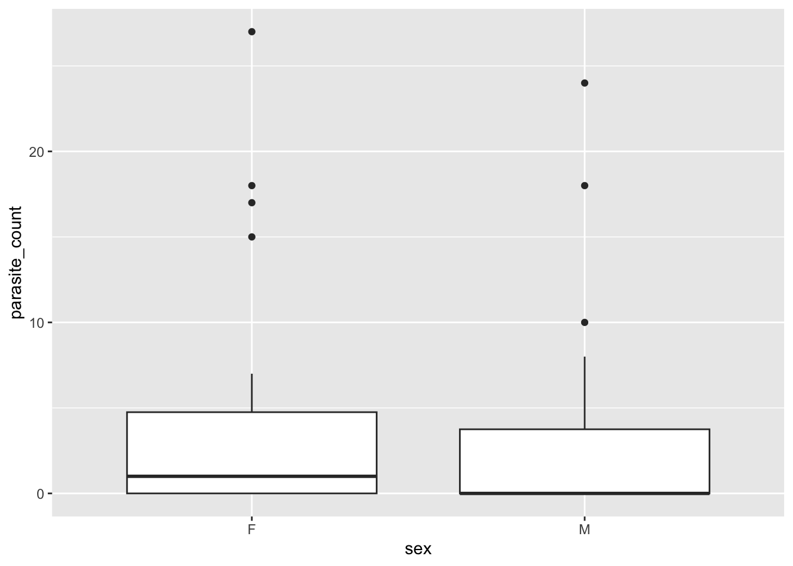
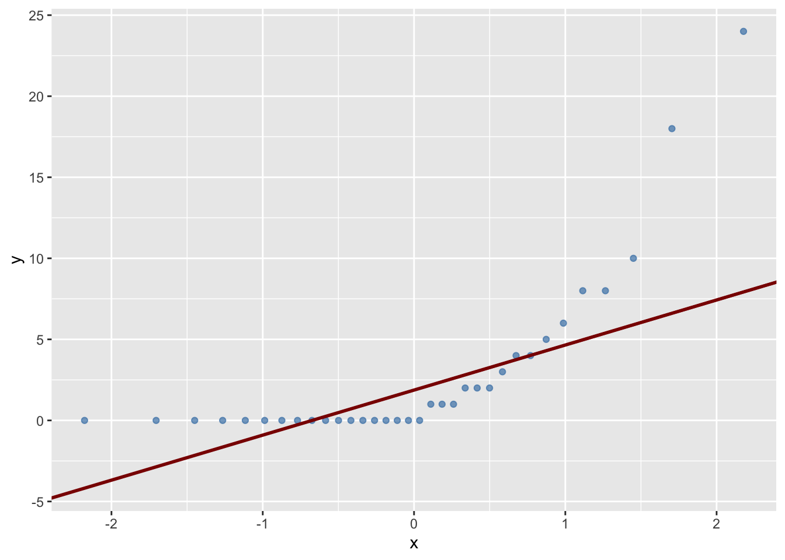

mice_parasites_histogram_F <- mice_parasites %>%
filter(sex == "F") %>%
ggplot(., aes(x = parasite_count)) +
geom_histogram(bins = 6)
mice_parasites_histogram_F
Welcome to today’s workshop extension! In this session, like last time, we will be focusing on summarising and testing our knowledge from what we learnt in the main workbook. We will be covering Sampling Distributions and Testing for Differences. We will also be revisiting some of the key terms and concepts from the main workbook, and applying them to a different dataset.
Here’s the plan for this session:
By the end, you’ll have learned how to justify your decisions statistically.
Let’s first recap some definitions and key terms from the main workbook. Have a play with the ‘Click to expand’ button below to familiarise yourself with the definitions, and then we will apply them to a case study.
Sampling
Selecting a subset (sample) of individuals or observations from a larger population to estimate characteristics of the whole population; without measuring everything.
Sampling error
The difference between a sample statistic and the true population parameter, arising because a sample may not perfectly represent the population.
Probability
A numerical measure (between 0 and 1) of the likelihood that a specific event will occur.
Variance
A measure of how much values differ from the mean, calculated as the average of the squared differences from the mean.
Standard deviation
The square root of the variance, expressed in the original units of the data.
Standard error of the mean (SEM)
An estimate of how much a sample mean is likely to vary from the true population mean: SD / sqrt(n).
Confidence intervals
A range of values, calculated from sample data, likely to contain the true population parameter at a given confidence level (e.g. 95%).
T-tests
Tests whether the difference between two means is larger than sampling error alone would explain.
Statistical significance A result is significant when its p-value falls below a chosen threshold (conventionally p < 0.05) — meaning the result is unlikely to be due to sampling error, not that the effect is large or important.
Now the definitions should ideally be fresh in your mind, let’s check your understanding with a few multiple choice questions.
What is a sample?
What is sampling error?
What is probability?
How is variance calculated?
What is the standard deviation?
How is the standard error of the mean (SEM) calculated?
What is a confidence interval?
What does a t-test assess?
What does a one-sample t-test do?
What does a two-sample t-test do?
What does statistical significance (p < 0.05) actually tell you?

A UEA research team wants to know the average number of Medflies (Ceratitis capitata) per apple tree in a large commercial orchard containing 2,000 trees. Counting flies on every tree is impractical, so the team selects 40 trees at random and counts the flies caught in a trap on each one.
Results from the 40 sampled trees:
The team also compares mean fly counts on edge trees vs interior trees (20 each).
1. What is the population in this scenario?
2. What term describes the 40 trees selected for sampling?
3. The true population mean turned out to be 13.1, but the sample mean was 14.2. This difference is best described as:
4. A colleague argues: “Since our sample mean (14.2) differs from the true population mean (13.1), our sampling method must have been biased.” Which response best evaluates this claim?
5. A 95% CI from the sample is 12.0-16.4 flies/tree. Correct interpretation?
6. Comparing edge trees vs interior trees calls for?
7. A student claims p = 0.03 for the edge-vs-interior test “proves edge trees definitely have more flies, and the effect must be biologically important.” Is there any flaw with this statement?
We will now put this case study to the side for a bit. Before we get back to our wood mice and their parasites, let’s recap parametric and non-parametric tests, since we’ll need that distinction shortly.
We learnt in the main workbook about parametric and non-parametric tests, and how to choose between them.
What is a parametric test and what is a non-parametric test?
Before running any statistical test, it’s good practice to visualise the data first. A quick plot can reveal the shape of the distribution, potential outliers, or patterns you’d otherwise miss, and this shapes which test is actually appropriate to use.
Parametric tests (like the t-test) assume that the underlying data are normally distributed. If your visualisation (like a histogram) shows the data are skewed, that assumption may be violated, which can make the test’s results unreliable. However, this doesn’t automatically mean the test result is wrong — it depends on how much the skew is actually affecting the outcome, which we can check in two ways:
!Task Alert!
First, we need to load our packages and read in the data. As in the previous workshop, we’ll use the tidyverse package, along with the mouse_parasite_counts.csv dataset. Please read these in, calling your object mice_parasites.
We learnt about using histograms to see the distribution of the data, learning about its shape, centre and spread.
Let’s now make two histograms of the parasite_count variable, one for female mice and one for male mice. This will allow us to visualise the distribution of parasite counts for each sex, and see if there are any differences between them.
mice_parasites_histogram_F <- mice_parasites %>%
filter(sex == "F") %>%
ggplot(., aes(x = parasite_count)) +
geom_histogram(bins = 6)
mice_parasites_histogram_F
mice_parasites_histogram_M <- mice_parasites %>%
filter(sex == "M") %>%
ggplot(., aes(x = parasite_count)) +
geom_histogram(bins = 6)
mice_parasites_histogram_M
Looking at the two histograms of parasite_count for female and male mice above, which statement best describes what you see?
Can we use a t-test to look for an effect of sex on parasite count in mice?
In the previous workbook, we learned that a two-sample t-test makes two assumptions:
The histogram can give us some idea of normality, but we can also use a Q-Q plot to check for normality.
A Q-Q plot compares the quantiles of the data to the quantiles of a normal distribution. If the points fall approximately along a straight line, the data are likely normally distributed. There is also a common first test, called the Shapiro-Wilk test.
mice_parasites_qq_F <- mice_parasites %>%
filter(sex == "F") %>%
ggplot(., aes(sample = parasite_count)) +
stat_qq(colour = "steelblue", alpha = 0.7) +
stat_qq_line(colour = "darkred", linewidth = 1)
mice_parasites_qq_M <- mice_parasites %>%
filter(sex == "M") %>%
ggplot(., aes(sample = parasite_count)) +
stat_qq(colour = "steelblue", alpha = 0.7) +
stat_qq_line(colour = "darkred", linewidth = 1)
mice_parasites_qq_F
mice_parasites_qq_M
shapiro.test(mice_parasites$parasite_count[mice_parasites$sex == "F"])
Shapiro-Wilk normality test
data: mice_parasites$parasite_count[mice_parasites$sex == "F"]
W = 0.64122, p-value = 9.159e-07shapiro.test(mice_parasites$parasite_count[mice_parasites$sex == "M"])
Shapiro-Wilk normality test
data: mice_parasites$parasite_count[mice_parasites$sex == "M"]
W = 0.60983, p-value = 2.63e-08What do these results tell you about the normality of the parasite count data for each sex?
We’ve already established that parasite count is not normally distributed for either sex (see histograms above), so a t-test is already on shaky ground — but let’s check the second assumption too, using Levene’s test, which we learnt about in the main workbook.
leveneTest(parasite_count ~ sex, data = mice_parasites)Warning in leveneTest.default(y = y, group = group, ...): group coerced to
factor.Levene's Test for Homogeneity of Variance (center = median)
Df F value Pr(>F)
group 1 0.492 0.4858
58 Why is the leveneTest sometimes used?
The P value from Levene’s test is P = 0.47, which is not significant (P > 0.05). This indicates that the variances of the groups are approximately equal, so that assumption is satisfied.
So, we have a mixed picture: the equal-variances assumption holds, but the normality assumption does not. Since a t-test requires both assumptions to be met, it isn’t appropriate here — we should use a non-parametric alternative instead.
Today’s workbook was a step up from last weeks, and we covered a lot of ground. We recapped the key terms from the main workbook, and applied them to a case study on medflies. We also revisited parametric and non-parametric tests, and applied them to the wood mice parasite data.